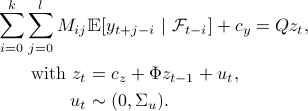

A short introduction to oxdoc
What's the purpose of oxdoc?
oxdoc is a tool for generating API documentation in
HTML format from comments in ox source code. It is inspired by
Sun Microsystems' Javadoc.
Installation
Installation is rather easy. Unzip the package oxdoc.zip into a
suitable folder, e.g. c:\program files\oxdoc. Next, edit the file
oxdoc.bat and alter the path variable in this file. For example,
you might want change the path definition into:
set oxdoc=c:/program files/oxdoc
Also, it may be helpful to copy the oxdoc.bat file into a
folder in your path, e.g. c:\windows. this way, it's possible to
run oxdoc from any folder in the command prompt.
Running oxdoc
Using oxdoc is rather easy. Generating documentation for an ox project
requires running oxdoc and specifying the names of the files you
want to generate documentation from. For example, suppose you have a number
of ox files in a folder. From there, run
oxdoc *.ox
from the command prompt in that folder. oxdoc generates a bunch
of HTML, of which default.html is the main file. Also,
copy the file oxdoc.css from your oxdoc folder
into your documentation folder.
Writing documentation in your source code
Now you know how to run oxdoc, it's time to write some comments
in your code. Documentation comments consist of the normal ox comments,
but instead of using /* and */, we use
/** and **/. Documentation comments must be placed
directly above class definitions and function definitions. For example:
/** The Lumberjack class represents a lumber jack **/
class Lumberjack {
decl wearsWomensClothes;
isOk();
sleep(const hours);
};
/** Checks whether this lumber jack is okay
@returns TRUE if this lumber jack is okay, FALSE if not.
@comments In the current implementation, lumber jacks are okay if and only
if they wear women's clothing.
@see Lumberjack **/
Lumberjack::isOk() {
if (this.wearsWomensClothes)
return TRUE;
else
return FALSE;
}
/** Make the lumber jack sleep for a specified number of hours
@param hours Number of hours to sleep. Has to be integer.
@comments The lumber jack cannot sleep more than 24 hours a day. **/
Lumberjack::sleep(const hours) {
println("The lumber jack is asleep");
println("(", hours, " hours later...)");
println("The lumber jack wakes up");
}
This example shows most of the features. Special items in the comments are:
| @param | Describes a parameter or argument of a function. The
first word after the @param keyword is treated as the name of the
parameter. |
| @returns | Indicates what is returned by the function |
| @see | Gives a cross reference. References have to
match the exact name of other entities. Also, references have to be
separated by commas. |
| @comments | Additional comments |
Moreover, it is possible to include any HTML tag. This may be useful for
inclusing of images (see How to generate LaTeX images), or adding
more intricate mark up.
How to generate LaTeX images
The MiKTeX distribution of LaTeX has an interesting tool called
dvipng, which gives the possibility of generating a PNG file from
a compiled LaTeX file. This is extremely useful for generating images that
represent mathematical formulas. It works as follows. First, make a
.tex file that contains your formula. For example,
\documentclass{article}
\usepackage{amsmath}
\usepackage{bbm}
\begin{document}
\pagestyle{empty}
\begin{align*}
\sum_{i=0}^k \sum_{j=0}^l M_{ij} & \mathbbm{E}[y_{t+j-i}\ |\ \mathcal{F}_{t-i}] + c_y = Qz_t, \\
\mbox{with}\ z_t & = c_z + \Phi z_{t-1} + u_t, \\
u_t & \sim (0, \Sigma_u).
\end{align*}
\end{document}
Don't forget to include the line \pagestyle{empty} or it won't work.
Compile this LaTeX file by running
latex formula.tex
This generates a .dvi file, which then can be converted into
a .png file by running
dvipng -T tight -D 120 -bg Transparent -o formula.png formula.dvi
Here, the parameters mean that we want tight border, i.e. we only want
the part of the page that contains 'ink'. We want a 120 dpi file, and
a transparent background. The output file will be formula.png.
In the beginning, you may have to run this twice in order for dvipng
to get the fonts right. The result is a formula like this:
